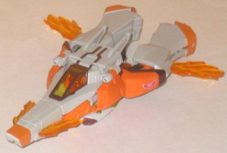
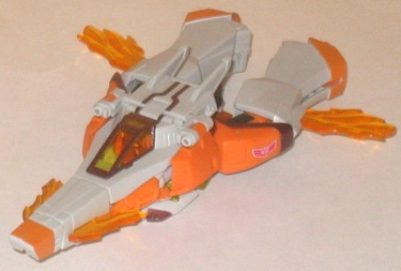

Difficulty of Transformation : Easy
Color Scheme : Dull off-white, light orange, and some rusty brown, black, transparent yellow, and transparent light orange
Individual Rating : 7.0
Allegiances
: Autobot
Sizes
: Deluxe (Voyager-priced 2-pack);
comes packed with Animated comic
Overall Rating
: 6.8
 Jetfire
Jetfire

Difficulty of Transformation
: Easy
Color Scheme
: Dull off-white, light
orange, and some rusty brown, black, transparent yellow, and transparent
light orange
Individual Rating
: 7.0
Jetfire's vehicle mode
is a futuristic jet. Unfortunately, this is one of those cases where "futuristic"
is really just an excuse to let it have a lazy transformation. The back
half of the "jet" isn't really jet-like at all, with there being no back
end and pitifully small wings. There's also no real middle to the back
half of this mode, making it painfully obvious that this part of the figure
is made up of the legs from robot mode. The front half of the jet mode
looks good proportionally, however, with a nice, sleek design and parts
that generally fit into a jet-ish shape. Given the long nose and iffy back
end, though, to be honest it looks more like an F-Zero hovercar than a
jet when taken as a whole. As with many Animated toys, Jetfire's mold detailing
is fairly limited, particularly in this mode to make the whole thing look
more aerodynamic. I do like the transparent orange "fiery" bits coming
out of the sides of the nosecone, as well as that fiery detailing used
for the "wings", small as they are. The cockpit is also transparent and
see-through, and it can be opened up as well-- though I'm not sure why
you would, as there's just the back of the head in there, there's no real
interior detailing. You can also see Jetfire's membership in the Elite
Guard, as those symbols are imprinted on the sides near the mid-section
of this mode. The overall color scheme of off-white and red is a bit fiery,
though a bit overly light overall (however, this is likely to offset Jetstorm's
colors, talked about below). The rusty dark brown does provide a nice dark
contrast color against the white and orange, but unfortunately I don't
think there's quite enough of it.
Jetfire's robot mode
is a bit more "normal" in proportions for Animated, with nothing beyond
the head sculpt particularly exaggerated in nature. (The head sculpt is
very well-done, though-- the molded-in "pilot goggles" on the forehead,
as well as the flame-hair, are nice touches and give him quite a bit of
personality.) In fact, beyond the "fiery" color scheme and head, there
really isn't ANYTHING paritcularly remarkable about the toy-- no really
kibble at all, as the cockpit folds behind his back and that's it as far
as "vehicle-only" pieces go. His arms and legs are pretty standard, though
his waist and hip joints are rather odd, he has no heels so he's not the
most stable TF, and his hands are merely molded into the nosecone halves,
something which I think is pretty lame at the deluxe scale. However, everything
pegs together pretty nicely and is fairly durable, so no floppiness issues
here-- plus, the added black on the waist gives Jetfire another dark contrast
color. I also like the transparent yellow detailing on Jetfire's chest,
that's a nice touch. His articulation is also fairly good-- he can move
at the neck (at two points), shoulders, elbows, wrists, hips (at four points),
knees (at two points), and slight movement at the ankles. The only major
thing he's really missing is some saist movement, really.
 Jetstorm
Jetstorm
Difficulty of Transformation
: Easy
Color Scheme
: Dark blue, dull light
sky blue, transparent aquamarine, and some black, silver, and pale metallic
gold
Individual Rating
: 7.4
Jetstorm is a repaint
and slight remold of Jetfire, so most of my comments on Jetfire's design
can be applied to Jetstorm here. Most of what's different is, of course,
the color scheme-- whereas Jetfire's was all fiery, Jetstorm's is icy/windy.
Dark blue and light blue are his main colors and go together quite well--
better than Jetfire's, if you ask me, as there's both a main light and
a main dark color in Jetstorm's scheme. The transparent aquamarine is also
a particularly good-looking shade, and the pale metallic gold makes a great
accent color. Jetstorm's "icy" theme continues when it comes to most of
his remolded pieces-- Jetfire's transparent fiery pieces on his wings and
the edges of his nosecone have been remolded into ice-detailed pieces,
which look mighty nice. Jetstorm also has a different head which, along
with his color scheme, are an homage to the Beast Machines character of
the
same name
. He has the same light blue
"pointy" chin detailing, visor-eyes, and similar forehead designs, though
this Jetstorm's design has been more "humanized" with a mouth and a head
that isn't elongated near the back. It's a nice homage design, but as far
as portraying the element he uses Jetfire's head design works better.
 Combined
Jet
Combined
Jet
Difficulty of Transformation to Combined
Jet Mode
: Very Easy
Individual Rating
: 5.4
Both Jetfire and Jetstorm
can combine their vehicle modes to create an unnamed "super jet mode".
Unfortunately, it's literally just attaching them both at the bottom and
angling their rear halves a bit to form a more "X" shape with the wings.
It's obviously pretty lame, and not only that, but it's hard to get them
both to stick together very well, given that the slight bulges at their
waists get in the way of a firm connection. This looks more like a fan-mode
than anything, but it's actually official.
 Safeguard
(Combined Robot Form)
Safeguard
(Combined Robot Form)
Difficulty of Transformation to Safeguard
:
Medium
Individual Rating
: 7.3
Jetfire and Jetstorm's
REAL combined form is a gestalt named Safeguard (Huh... you think it would've
been called Firestorm or something...) that employs a combining transformation
called "symmetrical docking". It's an homage to some older Japanese series
like GaoGaiGar, where two robots that were mirror images of each other
could combine down the center of the gestalt body. This creates a very
"mismatched" feeling for Safeguard, what with one half being completely
different om colors from the other, though this contrast is no doubt intentional.
The "core" proportions for Safeguard are more or less okay, with a fairly
broad chest and skinnier waist. Safeguard's two legs are made up of one
of Jetfire's and one of Jetstorm's legs, unmodified, so nothing different
there, though having they slide down at the waist a bit to make them look
longer was a nice step. His arms are a bit out-of-whack, due to the top
parts being overly skinny and the bottom parts being a bit overly thick
(they're made up of two of the legs from the combined form), but this can
be chalked up to Animated's exaggerated aesthetic. I also like the combined
gestalt head-- even ignoring color, the two halves of the gestalt head
are not quite identical, with the Jetstorm half having a slightly larger
head crest and a "swept back" detail at the chin, whereas the Jetfire half
has the smaller head crest and a round detail at the chin. What I really
don't like about this combined form, however, are the blatant arms having
off the back. The jet cockpits also hang off the back, but they don't really
get in the way or stick out too much, so I don't really mind them, but
the arms-- ugh. They stick way too far out, there's no set position that
you can peg them into, and they can interfere with articulation, so they're
all in all just a bad scene. Otherwise Safeguard's articulation is decent,
though-- he can move at the shoulders (at three points), elbows, hips (at
four points), knees, and slightly at the ankles.
Overall, the Animated duo of Jetfire and Jetstorm is probably a two-pack you can skip unless you're particular fans of the characters. Their jet forms are poor, their combined form REALLY poor, their robot modes alright but unexceptional, and their combined robot form alright but with some really annoying kibble. There's lots of Animated figures more worthy of your money than these two. The comic they come with is pretty entertaining, though, I will say that.
GALACTIC POWERS AND ABILITIES:
- The only Autobots that can fly
- Youngest Elite Guard members of all
time
- The first robots with the ability
to combine
Review by Beastbot